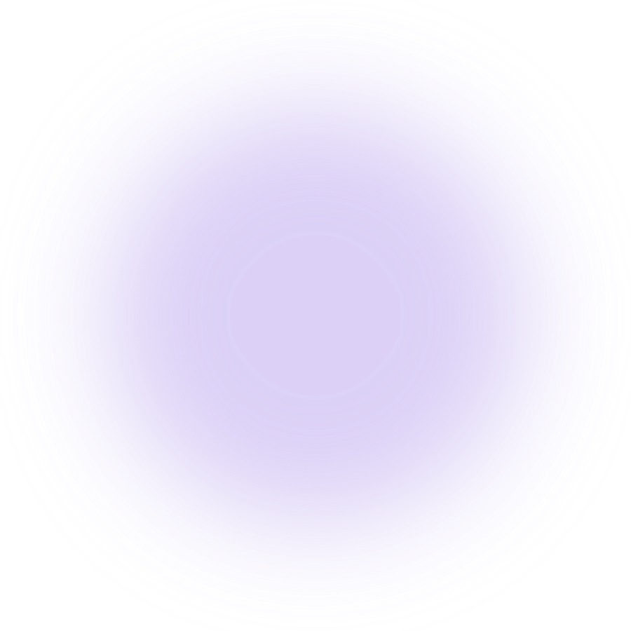
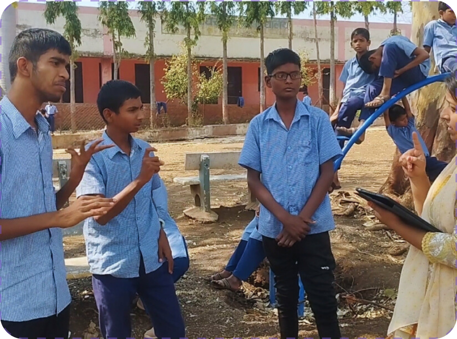
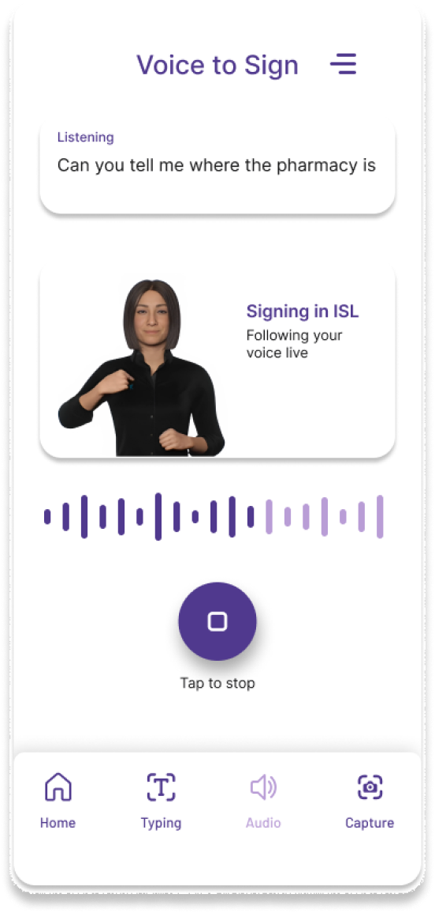
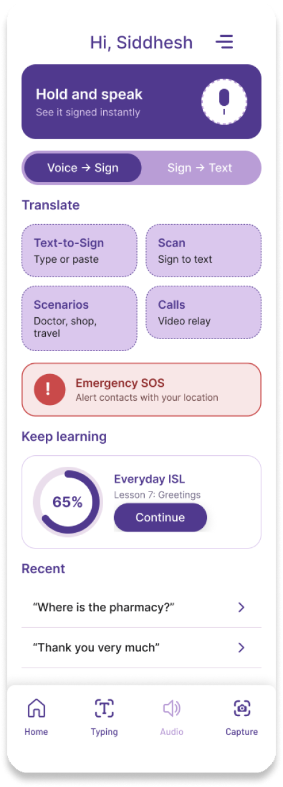
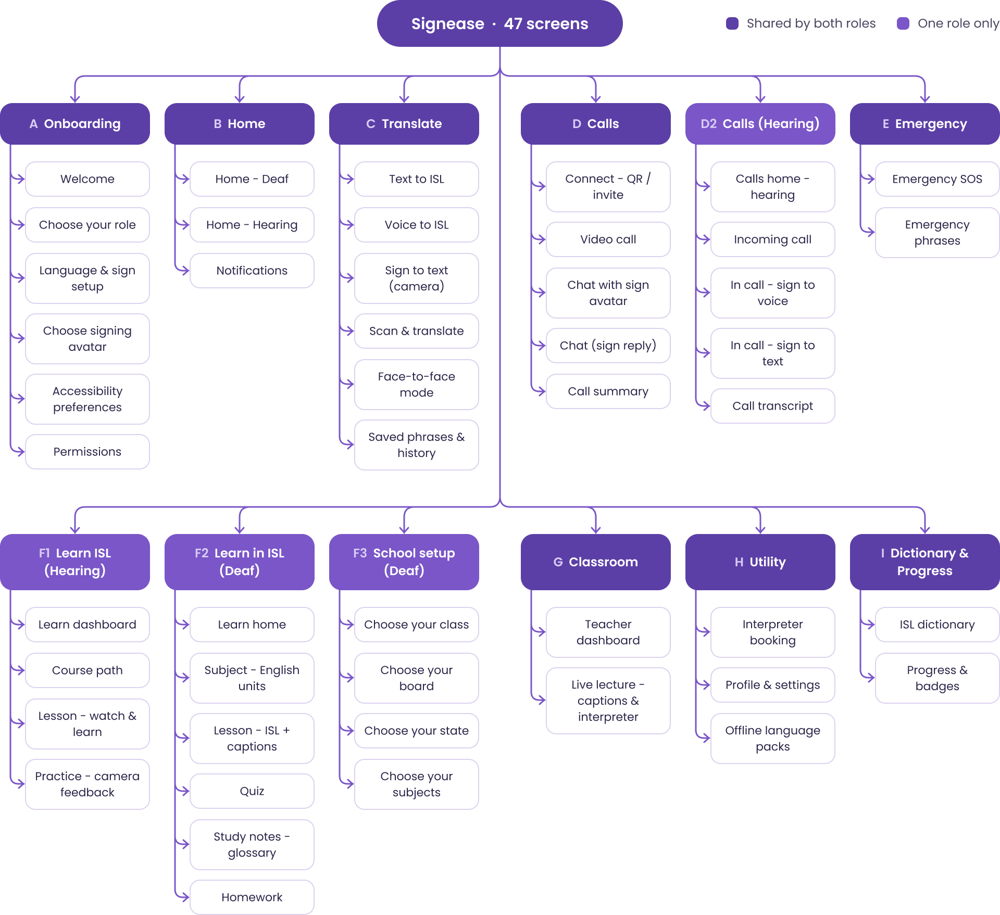
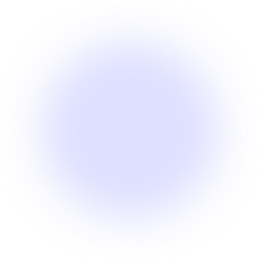
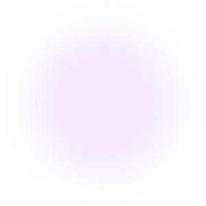

Signease · Indian Sign Language ecosystem
Signease, a sign-first app that lets Deaf and hearing people talk, learn and work together
UI/UX + ACCESSIBILITY
SOLO PRODUCT DESIGNER
TWO USER ROLES
47 SCREENS
View full case study on Behance





Go back
01
OVERVIEW
02
CONTEXT
03
PROBLEM
04
ITERATIONS
05
FINAL DESIGN
Translate
Learn
Calls
06
OUTCOME
01 / 06
OVERVIEW
About Signease
Signease is an accessibility-focused ecosystem for Indian Sign Language. A mobile app translates between text, voice and sign in both directions, with separate learning paths for Deaf and hearing users.
Overview: More than a translation tool
Signease began with a simple question: why should communication become difficult just because two people use different languages?
The project explores an Indian Sign Language-first ecosystem that brings communication and learning into one experience. Instead of treating accessibility as a feature added to an existing product, I designed for Deaf and hearing people as two equally important participants in a conversation.
My role
End-to-end product design, from research and problem framing to information architecture, user flows, UI design and prototyping.
Scope
Field research
Personas
IA and user flows
UI system
47 screens
Prototype
Outcomes
47
Screens across two roles and one design system
4
Personas built from a field visit to a Deaf school
5
Products scoped, with the mobile app designed end to end
02 / 06
CONTEXT
ISL is a first language for millions.
Most tools still assume Text.
Deaf people in India grow up signing, then meet a world built on speech and written language. Teachers, doctors and employers rarely sign, and interpreters are scarce.
My elder sister is Deaf. I wanted a tool that not only assists, but also raises awareness.
35–44%
of reading, language and maths variance explained by sign-language proficiency alone
Hrastinski & Wilbur, 2016
4×
more reading-comprehension questions answered correctly by sign-fluent students: 40% against 10%
Hrastinski & Wilbur, 2016
8th–9th
grade reading level reached by native-signing deaf readers, against a 4th-grade average
From the literature review: a strong first language in sign is what makes reading possible, and the bridge to text has to be taught.
FACT
73.9% of Deaf adults aged 15–59 are marginal workers. Only 26.1% hold regular jobs, and communication is a big reason why.
03 / 06
PROBLEM
What I heard beyond the language barrier
I visited a school for the Deaf in Buldhana, Maharashtra, and spoke with 10 -12 students, their teachers and parents. Their stories kept pointing at the same wall.

WHAT WE HEARD
STUDENT
“We don’t understand language subjects well; they are hard for us.”
TEACHER, DEAF SCHOOL
“I explain, they copy, and I am never sure they understood.”
STUDENT, CLASS 7
“I want to become an engineer, but can a deaf person become one?”
CORE PROBLEM STATEMENT
“How might we help Deaf people communicate and learn in ISL, and help hearing people meet them halfway, so language stops being a barrier?”
Three issues created this problem
Pen and paper
Gestures
No interpreter
COMMUNICATION
Every conversation is a negotiation
Ordering food or explaining symptoms depends on notes and guesswork.
Forms
Websites
Captions
INFORMATION
Text alone is not accessibility
ISL and written grammar differ, so a form or caption is harder to read than it looks.
Teacher can’t sign
No ISL books
EDUCATION
Lessons get lost in translation
Students copy from the board without understanding, and teachers have no ISL-ready material.
04 / 06
Design iterations
A direction I explored
before the final UI
My first version used full solid-purple screens. Testing it against real reference apps showed three problems, so I moved away from it.
V1 · BEFORE


V2 · AFTER
WHAT WAS WRONG
Heavy and tiring
A solid colour field dominated every screen.
WHAT WAS WRONG
Weak hierarchy
Cards and text lost contrast against purple.
WHAT WAS WRONG
Not the calm tone I wanted
Learners need focus, not intensity.
V2 keeps purple as an accent, not a wash: light glass surfaces, high contrast, and calm enough to read outdoors.
05 / 06
FINAL DESIGN
Bringing communication
and learning together
Three principles from the research ran through every screen:
01
Sign video leads,
text supports.
02
One layout for
both roles.
03
Every mode one tap
from the nav.
INFORMATION ARCHITECTURE
47 screens, 12 modules, one five-tab app
Before the screens, I mapped what exists and where it sits. Both roles share the same navigation; only a few modules change by role.

Onboarding · Choose your role
Hearing user · Home
Emergency · Hold for SOS
Onboarding, both homes, translate, learn, calls and emergency help. Same components, two roles, one five-tab navigation.
06 / 06
OUTCOME
What this is,
and what it is not yet
A case study is only honest if it says where it stops. Signease is a concept, and these are its edges.
WHAT THIS IS
— An ISL-first concept, scoped as five products with one app designed end to end.
— Grounded in a field visit and four peer-reviewed papers.
WHAT IT IS NOT YET
— There is no trained ISL recognition model. Sign-to-text is designed, not built.
— Not yet usability tested with a Deaf cohort at scale.
WHAT I WOULD DO NEXT
— Time five Deaf students on the Translate flow.
— Take the sign vocabulary to ISLRTC for review.
The goal was never to translate for Deaf people. It was to let them communicate, and be communicated with, in their own language.
THAT WAS THE SHORT VERSION
The full case study has the field research, personas, user flows and every iteration behind each decision.
View full case study on Behance

Next project
TrackIt
02
Making everyday money management simpler

